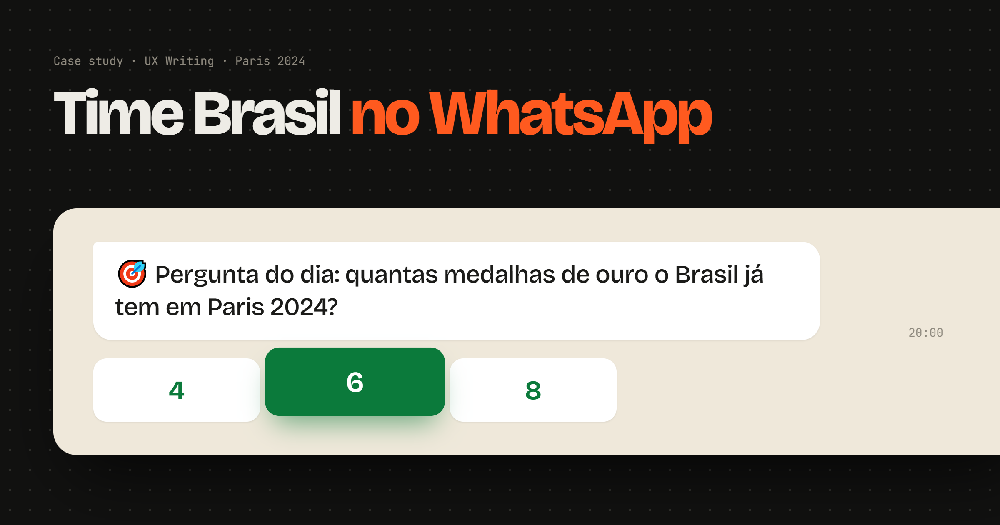
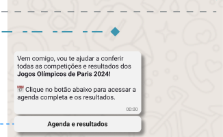
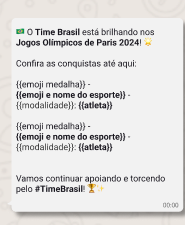
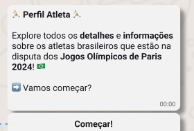
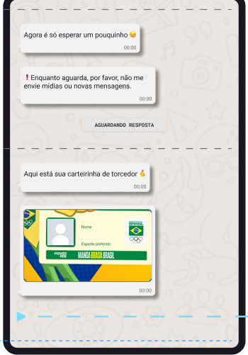
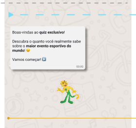
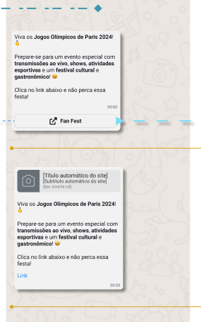

Conteúdo oficial dos Jogos
Agenda, resultados, quadro de medalhas e perfis de atletas, estruturados em linguagem clara pra conversa no WhatsApp.
Case study
UX Writing e engenharia de conversas para o Time Brasil, o chatbot oficial do Comitê Olímpico do Brasil (COB) em parceria com a Meta, com patrocínio da Powerade, levando os Jogos Olímpicos de Paris 2024 direto pro WhatsApp.

Agenda, resultados, quadro de medalhas e perfis de atletas, estruturados em linguagem clara pra conversa no WhatsApp.
Menu com múltiplos caminhos — do resultado do dia a curiosidades sobre os atletas — pensados pra intenções diferentes de quem usa.
Conteúdo patrocinado pela Powerade integrado à experiência sem interromper o fluxo principal de informação.
O desafio era entregar informação relevante sobre os Jogos — agenda, resultados, medalhas, atletas — de forma clara dentro de um canal de mensagens, equilibrando atualização quase em tempo real durante as competições com o conteúdo da marca patrocinadora, sem perder a clareza do fluxo principal.
Porque é o canal que a maioria das pessoas já usa todo dia — ninguém precisa baixar um app novo nem criar conta em outro lugar só pra acompanhar os Jogos. A informação chega onde a pessoa já está.
Depois do cadastro e do opt-in, a pessoa chegava a um menu com os principais caminhos de informação sobre os Jogos.
A partir do menu principal, era possível consultar agenda e resultados, quadro de medalhas, perfis de atletas, participar de quiz e curiosidades, encontrar os pontos oficiais de torcida e gerar um cartão de torcedor personalizado pra compartilhar.
Clique nas abas pra ver o tipo de conteúdo de cada caminho

Horários das competições do dia e o resultado de cada uma, resumidos em poucas linhas.

Posição geral do Brasil e o detalhamento ouro/prata/bronze por modalidade.

Perfis e curiosidades sobre os atletas brasileiros em cada modalidade.

Uma peça personalizada que a pessoa monta e compartilha, torcendo por uma modalidade.

Perguntas rápidas sobre as Olimpíadas, pra engajar quem gosta de um desafio enquanto acompanha os Jogos.

Informações sobre os pontos oficiais de encontro pra torcer em grupo durante os Jogos.
Prints reais, direto do protótipo em Figma do Time Brasil.
Nem todo mundo passava pelo menu do mesmo jeito — alguns exemplos rápidos de como uma pergunta direta já levava à resposta certa.
Como foi o jogo de vôlei hoje?
🏐 Vôlei feminino: Brasil 3 x 1 Japão! Melhor pontuadora: Gabi, com 22 pontos.
Quem é a Rebeca Andrade?
Rebeca Andrade, 25 anos, ginasta e uma das maiores esperanças de medalha do Brasil na ginástica artística 🤸♀️
Quero fazer meu cartão de torcedor
Show! Pra qual modalidade você tá torcendo hoje?
Vôlei 🏐
Prontinho! Seu cartão já tá pronto pra compartilhar 🇧🇷
🎯 Pergunta do dia: quantas medalhas de ouro o Brasil já tem em Paris 2024?
6
Isso aí! 🎉 O Brasil já soma 6 medalhas de ouro até agora.
Mockups ilustrativos de conversa, baseados no tom real do bot — não são prints do produto.
Trabalhar com conteúdo ao vivo, durante um evento internacional, trouxe desafios bem diferentes de um fluxo estático.
Durante os dias de competição, agenda e medalhas precisavam ser atualizadas com frequência, sem deixar a conversa desorganizada ou confusa.
O conteúdo da Powerade precisava ter espaço garantido sem competir com o que o torcedor foi buscar no bot em primeiro lugar.
Os dias de competição concentravam bem mais gente conversando com o bot ao mesmo tempo — isso pedia respostas previsíveis e fáceis de entender rápido.
Cada trecho de conteúdo oficial passava por aprovação de mais de uma parte envolvida no projeto — clareza e objetividade ajudavam a agilizar esse vai e vem.
A partir das preferências informadas no cadastro, o conteúdo era direcionado pros temas de maior interesse de cada pessoa — resultado do dia, modalidade específica ou acompanhamento geral — em vez de um só feed genérico pra todo mundo.
Cada resposta precisava funcionar dentro do formato do WhatsApp — textos curtos, opções de menu claras e botões que deixassem evidente o próximo passo, mesmo em fluxos com várias etapas (como o cartão de torcedor personalizado).
Integramos o conteúdo patrocinado pela Powerade junto às informações que o torcedor já estava buscando, mantendo a presença da marca sem transformar a conversa num espaço só de publicidade.
Como agenda, resultados e medalhas mudavam o tempo todo durante os Jogos, estruturamos o conteúdo em blocos que podiam ser atualizados rapidamente sem reescrever o fluxo inteiro — o padrão da mensagem ficava fixo, só a informação dentro dela mudava.
Clique nos cards pra virar e ver.
O Time Brasil levou conteúdo oficial sobre os Jogos de Paris 2024 — agenda, resultados e medalhas — direto pro WhatsApp de quem acompanhava a competição, com o cartão de torcedor personalizável se tornando um dos pontos de maior engajamento espontâneo da experiência.
Resultado descrito de forma qualitativa, com base na experiência publicada do projeto.